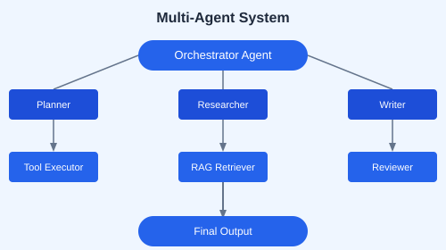

Deploy agents to serverless cloud platforms like Modal for scalable, pay-per-use inference.
pip install modalimport modal
app = modal.App("agent-app")
@app.function(gpu="A100")
def run_agent(prompt: str):
# Load model and generate
return response
@app.local_entrypoint()
def main():
print(run_agent.remote("Analyze this data"))Use ensemble retrieval with multiple embedding models for better coverage.
from langchain.retrievers import EnsembleRetriever
retriever = EnsembleRetriever(
retrievers=[chroma_retriever, bm25_retriever],
weights=[0.7, 0.3]
)
from pydantic import BaseModel
from typing import List
class Deal(BaseModel):
title: str
price: float
discount: float
url: str
category: str
class DealScanResult(BaseModel):
deals: List[Deal]
total_savings: floatBuild agents that plan, execute, and evaluate — creating a Plan → Execute → Review loop.
class PlanningAgent:
def plan(self, task):
return self.llm(f"Create a step-by-step plan for: {task}")
def execute(self, plan):
for step in plan:
result = self.execute_step(step)
yield result
def review(self, results):
return self.llm(f"Evaluate these results: {results}")Build a price-is-right deal scanner agent with: